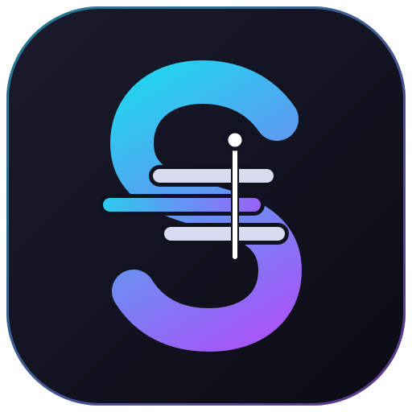

Cuts what you'd cut anyway
"Um", "I think I think", a sentence started twice, the same line said again, a lone "yeah": found and cut, keeping the final, fuller version.

For DaVinci Resolve · Free and open source
StoryCraft turns unscripted footage into text, cleans out what you'd cut anyway, and helps you (or your AI) arrange the moments that matter. Then it hands Resolve a finished timeline.
The best interviews have no script. They're also the slowest to edit: hours of footage, a few moments that matter, and a story hidden somewhere between them.
StoryCraft does the sorting so you can do the storytelling.
How it works
An example interview with a bicycle mechanic, from raw footage to a two-minute story. Click a step, or let it play.
Um, so I, I started fixing bikes in my garage.
A neighbour brought me a broken one. Broken one.
sound without words
It changed everything. You know? Changed everything.
Now kids come by after school to learn.
Um, so I, I started fixing bikes in my garage.
A neighbour brought me a broken one. Broken one.
sound without words · +15 dB
It changed everything. You know? Changed everything.
Now kids come by after school to learn.
Build a 2-minute story from this interview.
get_transcript 38 moments
check_edit 2:31 · clips 3 and 5 make the same point
check_edit 1:58 · the edit flows
apply_edit on the story board
Opens in the garage, the first bike, what changed, the kids, and ends on why it matters.
Jump cut · cover with a punch-in or B-roll
Sent: 5 clips, 1:58 · 4 crossfades · 1 jump-cut marker · source timeline unchanged
The app
Screenshots of StoryCraft at 1920 × 1080, with an invented interview. Click a picture to see it full size.
What it does for you
"Um", "I think I think", a sentence started twice, the same line said again, a lone "yeah": found and cut, keeping the final, fuller version.
Every cough, knock or background voice is measured against the speaker. The loud ones go; you listen to the rest and keep or cut each one.
The transcript as blocks you drag into any order, with a target length and a clarity score on each one, so you build the story by meaning.
Cut points land on the quietest moment, never inside a word, and never one word before a sentence ends. Pauses stay even.
Play the edit, cuts and all, inside StoryCraft. Resolve only gets a timeline when you're happy with it.
A new timeline in a StoryCraft bin, with crossfades on every join and markers where the picture jumps or a sound needs a listen.
Bring your own AI
StoryCraft doesn't need an account or a subscription. It prepares the interview for an AI, then checks the answer before anything reaches your story board.
Copy and paste
Built-in MCP server
Ask Claude Desktop or Claude Code for "a 2-minute story from this interview". It reads, checks and fixes its own edit, then puts it on your story board, and sends it to Resolve if you ask. Your Claude app asks before each step.
Install
Paste it into a terminal. The installer puts StoryCraft in its own folder, adds it to Resolve's Workspace → Scripts menu, and can update, repair or uninstall it later.
curl -fsSL "https://raw.githubusercontent.com/Boris-Edu/StoryCraft/fork/setupfiles/mac-setup.sh" | bashirm "https://raw.githubusercontent.com/Boris-Edu/StoryCraft/fork/setupfiles/windows-setup.ps1" | iexcurl -fsSL "https://raw.githubusercontent.com/Boris-Edu/StoryCraft/fork/setupfiles/linux-setup.sh" | bashGet in touch
StoryCraft is a personal project, and it gets better with every message. Found a bug, hit a problem, have an idea or a comment? Tell me. And if you edit interviews, make documentaries or just like the idea, I'd be glad to connect.
Or write directly to boris@dessimond.com. Prefer GitHub? Open an issue.
Built on BadWords
StoryCraft is a fork of BadWords, which Szymon Wolarz built as a solo developer and shared under the MIT licence. The transcription, the Resolve connection and the timeline assembly all started there. If StoryCraft saves you time, please support him directly.